Google Home Guide
Learn to make a Goole action using Grails
Authors: Ryan Vanderwerf, Sergio del Amo
Grails Version: 4
1 Grails Training
2 Getting Started
In this guide you are going to learn how to create a Grails application to host a Google Action for your Google Home device to interact with. We will build, deploy, and set up everything necessary to facilitate this on Google App Engine Flexible and Google APIs.
We will be using the early access unofficial Java SDK to build actions. This is because the only official SDK is built with node.
2.1 What you will need
-
Some time on your hands
-
A decent text editor or IDE
-
A Google account
-
A Google Cloud account
-
curl command to help debugging
2.2 How to complete the guide
The initial project is a Grails Application built with the web profile where we removed the asset-pipeline and hibernate depenencies.
Although you can go right to the completed example, in order to deploy the app you would need to complete several configuration steps Google Cloud Settings.
You will need to edit the file src/main/resources/action.json to point to your Google App Engine Flexible deployment.
3 Google Cloud Settings
3.1 Create a Google Cloud Project
3.2 Install gactions CLI
We will use gactions CLI to test our app.
Go to gactions CLI and download it:
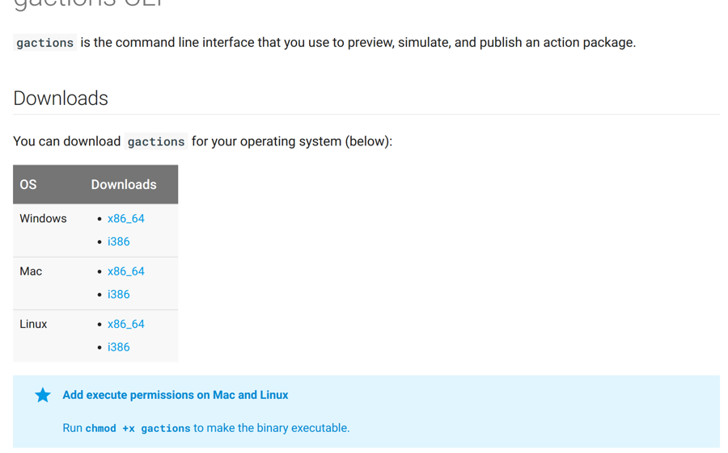
Make the gactions binary executable (chmod +x on linux and OSX).
After you have installed gactions, run the init command in your terminal:
$ gactions init --forceOther commands you can run: preview, update, deploy, test, and list.
3.3 Configure Google Actions
Enable Google Actions API
Go to Google API Manager Console and enable Google Actions API.
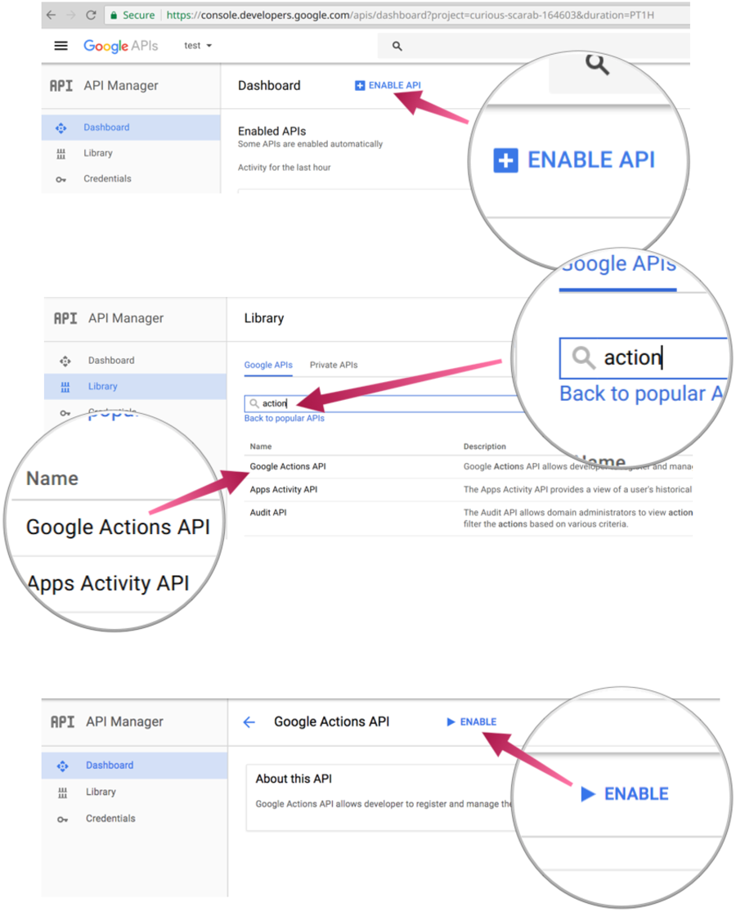
Import your Project to the Google Actions Console
Go to the new Google Actions Console and import the project your previoulsy created:
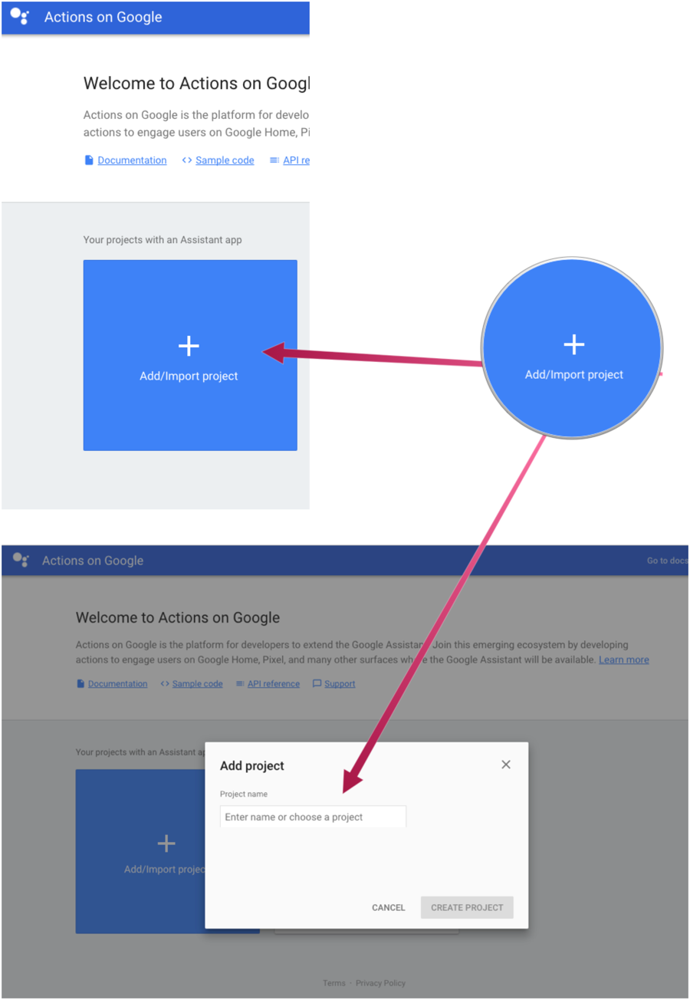
Configure your project ID in action.json
action.json is a metadata file which we use to inform the Google Cloud Actions Console about the
actions supported by our application.
Here you can also control:
-
sample queries to help google understand which action to call
-
intent to call
link:../snippets/src/main/resources/action.json[role=include]As shown above, our app supports two actions. We explain those actions with more detail in the next sections of this guide.
We will need to modify the httpExecution items to match your deployed application endpoints.
"url": "https://PROJECT_ID.appspot.com/assistantAction/index"Add Actions to your assistant app
The first time you select a project in the Google Cloud Actions Console, you will need to supply the action package JSON via the gactions tool like so:
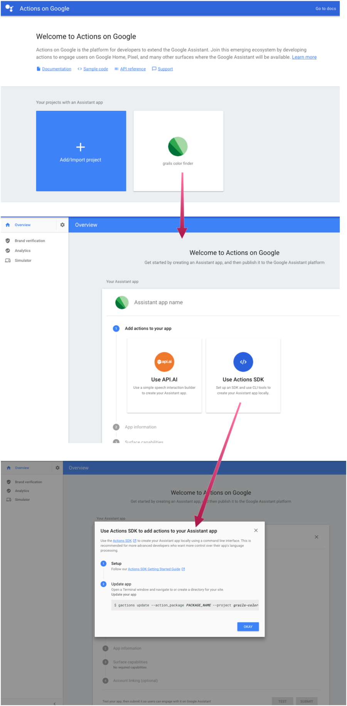
gactions update --action_package src/main/resources/action.json --project PROJECT_IDFollow the instructions prompted by the above command. It involves an authorization process.
At the end you will see an output similar to:
Your app for the Assistant for project PROJECT_ID was successfully updated with your actions. Visit the Actions on Google console to finish registering your app and submit it for review at https://console.actions.google.com/project/PROJECT_ID/overviewAdd App Information
After you actions package has been validated, you will be able to enter directory information such as images, privacy policy, and descriptions. Here you can also pick the voice of the speaker in your skill.
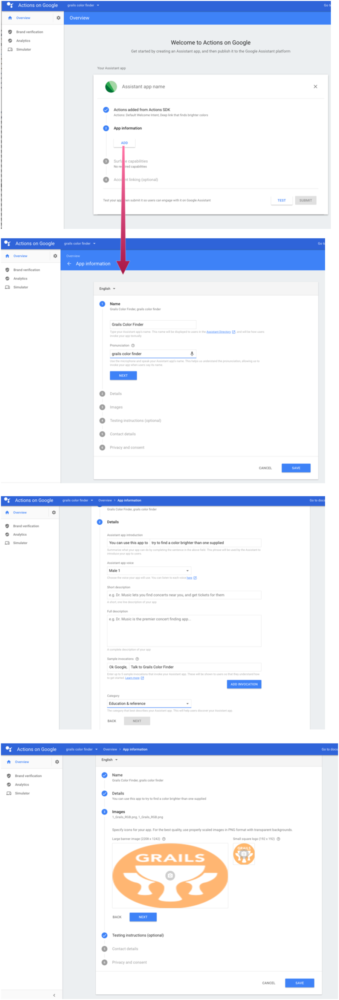
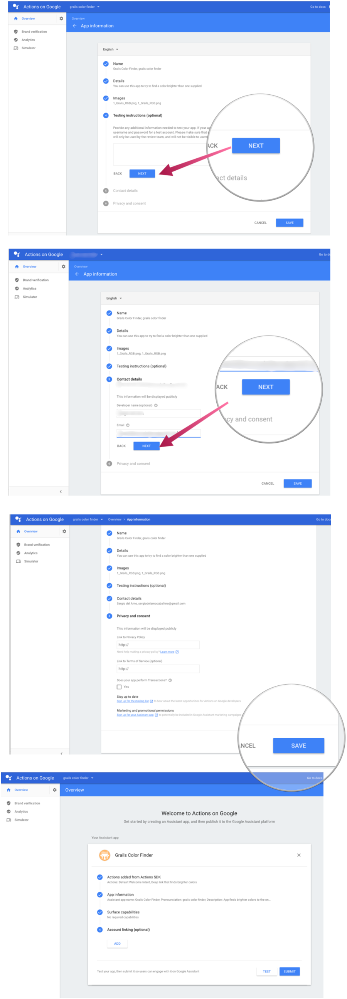
The previous screenshots display two buttons. Test and Submit. We will click the Test in the previous screenshots once we have deployed our app to Google App Engine Flexible and we are ready to test our actions.
3.4 Google App Engine
4 Writing the Application
4.1 Handle Request from Google in Grails
We name our app color finder. We want to achieve the scenario pictured below:
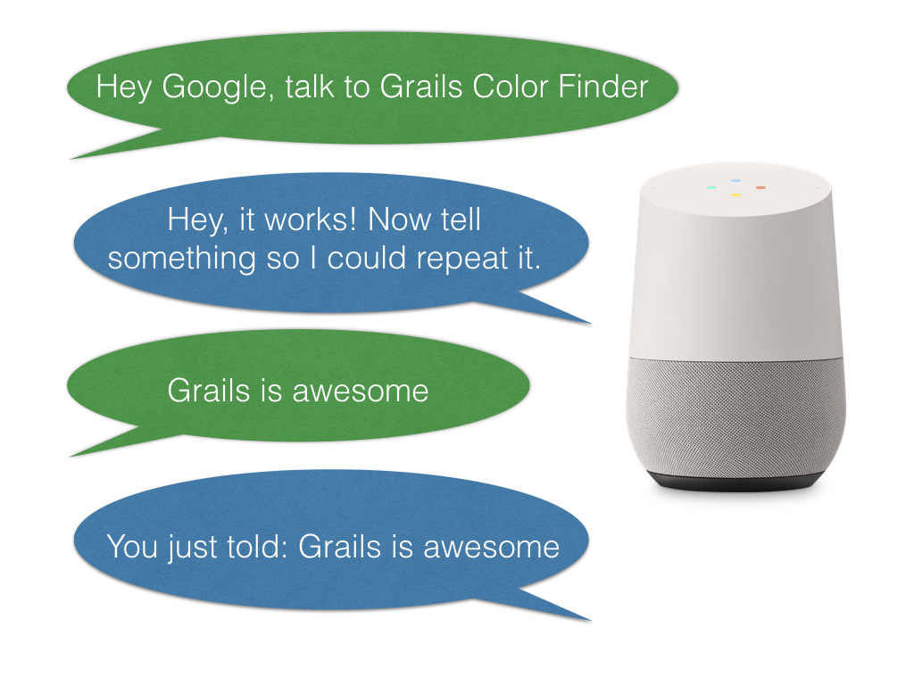
First, we are going to add a dependency to Google Actions Java SDK
link:../snippets/build.gradle[role=include]The illustrated conversation is managed with the handlers. We instantiate the handlers with factories. Add the next classes to your app:
link:../snippets/src/main/groovy/demo/MainRequestHandlerFactory.groovy[role=include]link:../snippets/src/main/groovy/demo/MainRequestHandler.groovy[role=include]link:../snippets/src/main/groovy/demo/MainRequestHandler.groovy[role=include]link:../snippets/src/main/groovy/demo/TextRequestHandlerFactory.groovy[role=include]link:../snippets/src/main/groovy/demo/TextRequestHandler.groovy[role=include]We are going to handle the request that come from Google in a Grails Controller:
The Grails Controller, in turn, will delegate to Actions SDK.
link:../snippets/grails-app/controllers/demo/AssistantActionController.groovy[role=include]
link:../snippets/grails-app/controllers/demo/AssistantActionController.groovy[role=include]
link:../snippets/grails-app/controllers/demo/AssistantActionController.groovy[role=include]
link:../snippets/grails-app/controllers/demo/AssistantActionController.groovy[role=include]
link:../snippets/grails-app/controllers/demo/AssistantActionController.groovy[role=include]
link:../snippets/grails-app/controllers/demo/AssistantActionController.groovy[role=include]| 1 | We can chain handlers |
| 2 | Grails action delegates to Actions SDK to handle requests that come from Google. |
| 3 | We do not want to return a grails view. The handlers manage the response |
Add GrailsResponseHandler to your project. As illustrated above, it allow us to use a controller to process the incoming requests.
link:../snippets/src/main/groovy/demo/GrailsResponseHandler.groovy[role=include]4.2 Color Handler
To honor our app’s name we want to handle the next scenario as well:
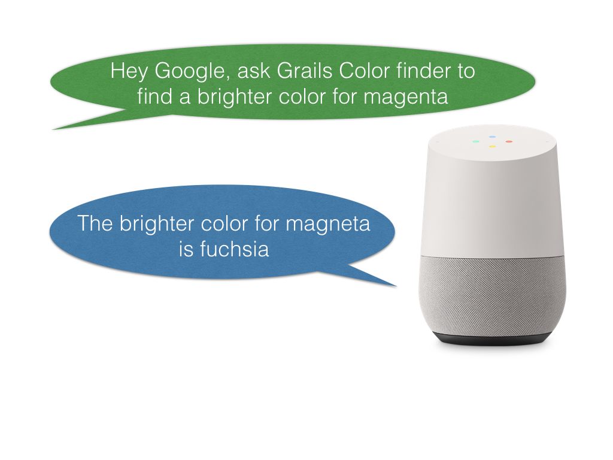
Similar to the previous example. We need a handler and a factory to instantiate the handler.
This handler demonstrates passing a verbal parameter into the intent. When the user asks for a brighter color for X it will try to find a brighter color with a name and say it to the user.
link:../snippets/src/main/groovy/demo/ColorRequestHandlerFactory.groovy[role=include]link:../snippets/src/main/groovy/demo/ColorRequestHandler.groovy[role=include]We are going to handle the request that come from Google in another action of our controller:
link:../snippets/grails-app/controllers/demo/AssistantActionController.groovy[role=include]
link:../snippets/grails-app/controllers/demo/AssistantActionController.groovy[role=include]
link:../snippets/grails-app/controllers/demo/AssistantActionController.groovy[role=include]
link:../snippets/grails-app/controllers/demo/AssistantActionController.groovy[role=include]
link:../snippets/grails-app/controllers/demo/AssistantActionController.groovy[role=include]
link:../snippets/grails-app/controllers/demo/AssistantActionController.groovy[role=include]| 1 | Instantiate the handler with the help of the factory |
| 2 | Grails action delegates to Actions SDK to handle requests that come from Google. |
| 3 | We do not want to return a grails view. The handlers manage the response |
Let’s use a simple utility class to make our action do something interesting. This will help us map a given java.awt.Color to give us a english name for it.
link:../snippets/src/main/groovy/demo/util/ColorUtils.java[role=include]Previous class is a Java Class. Grails allows us to mix Groovy and Java code seamlessly.
4.3 Unofficial Google Actions Java SDK
The SDK is at https://github.com/frogermcs/Google-Actions-Java-SDK however all we need to do is edit our build.gradle to include the library.
link:../snippets/build.gradle[role=include]4.4 Google App Engine Gradle Plugin
4.5 Application Deployment Configuration
4.6 SpringBoot Jetty
4.7 Deploying the App
5 Test
5.1 Test and interact with your Google Action
Once your app is deployed in Google App Engine Flexible, you can test it.
Go back to the Google Actions Console and click test.
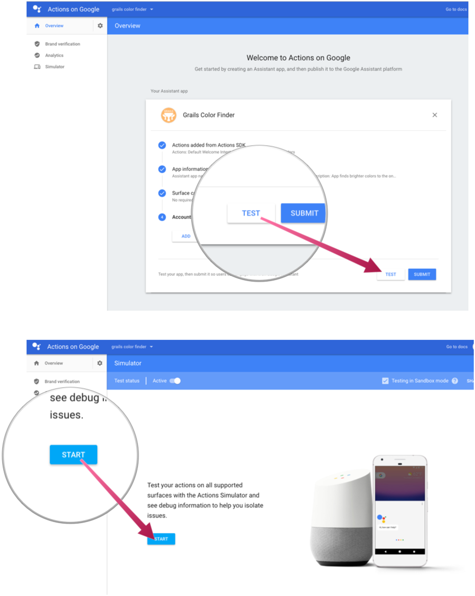
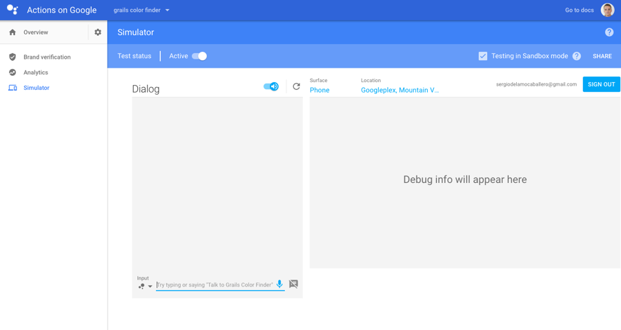
Try to test out your actions with the following phrases:
Ask to Grails Color Finder to find a brighter color for magenta
You should see the response:
Sure, here is the test version of Grails Color Finder The brighter color for magenta is fuchsia"
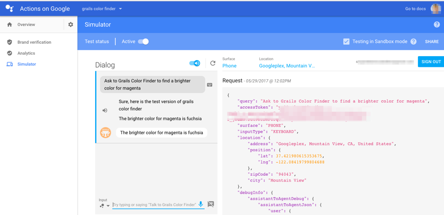
Let’s try another:
talk to Grails Color Finder
You’ll see:
Sure, here is the test version of Grails Color Finder Hey, it works! Now tell something so I could repeat it.
Now respond with something:
Grails is awesome
You should see it echo back what you entered:
You just told: Grails is awesome
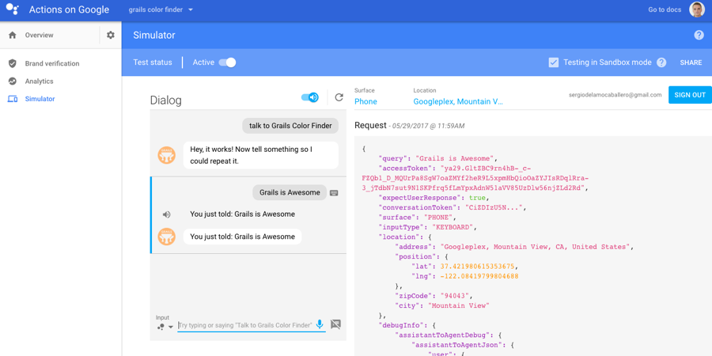
Now you can make a more rich skill, and when you are ready go to the Google API dashboard, fill in the directory listing and submit it for testing.